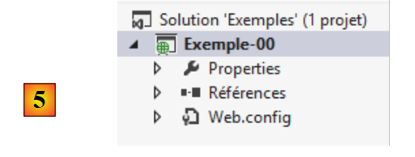
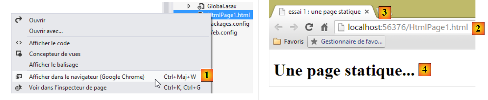
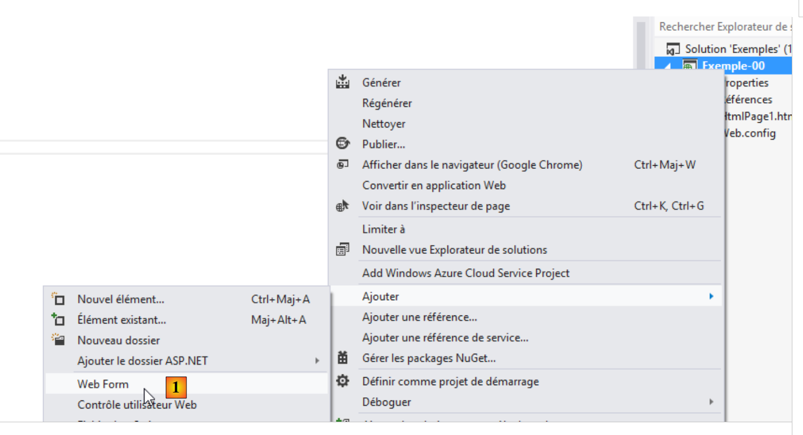
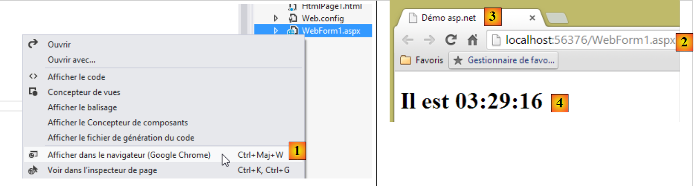
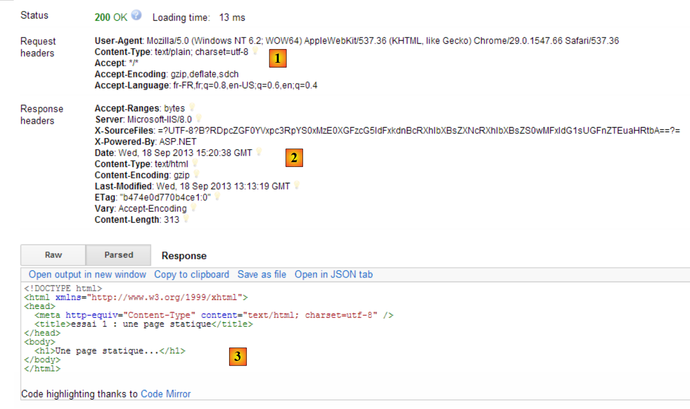
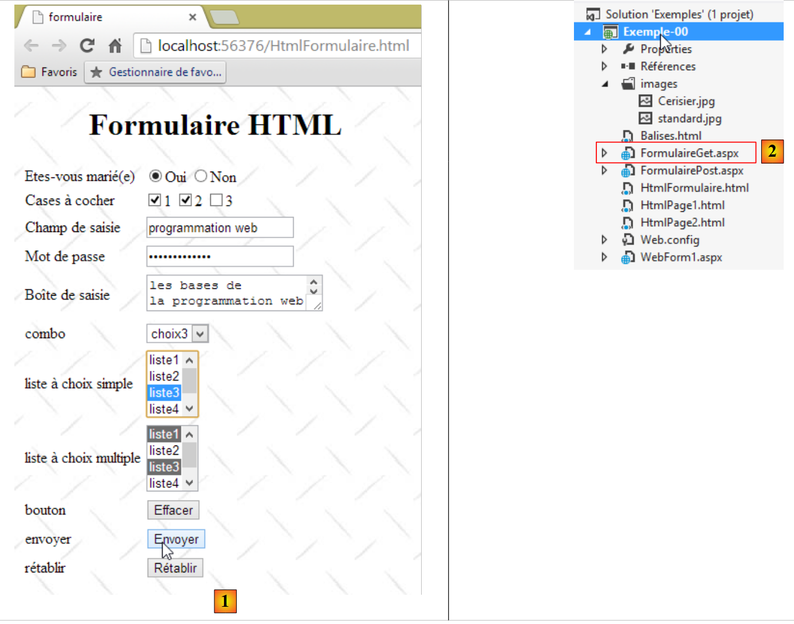
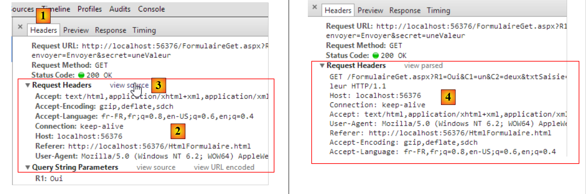

2. The Basics of Web Programming
The primary purpose of this chapter is to introduce the key principles of web programming, which are independent of the specific technology used to implement them. It presents numerous examples that you are encouraged to try out in order to gradually “get a feel” for the philosophy of web development. Readers who already have this knowledge can skip directly to the next chapter.
The components of a web application are as follows:

Number | Role | Common Examples |
1 | OS Server | Unix, Linux, Windows |
2 | Web server | Apache (Unix, Linux, Windows) IIS (Windows + .NET platform) Node.js (Unix, Linux, Windows) |
3 | Server-side code. It can be executed by server modules or by programs external to the server (CGI). | JAVASCRIPT (Node.js) PHP (Apache, IIS) JAVA (Tomcat, WebSphere, JBoss, WebLogic, ...) C#, VB.NET (IIS) |
4 | Database - This can be on the same machine as the program that uses it or on another machine via the Internet. | Oracle (Linux, Windows) MySQL (Linux, Windows) Postgres (Linux, Windows) SQL Server (Windows) |
5 | OS Client | Unix, Linux, Windows |
6 | Web browser | Chrome, Internet Explorer, Firefox, Opera, Safari, ... |
7 | Client-side scripts executed within the browser. These scripts have no access to the client machine's disks. | Javascript (any browser) |
2.1. Data exchanges in a web application with a form

Number | Role |
1 | The browser requests a URL for the first time (http://machine/url). No parameters are passed. |
2 | The web server sends it the web page for this URL. It can be static or dynamically generated by a server-side script (SA) that may have used database content (SB, SC). Here, the script will detect that URL was requested without any parameters and will generate the initial web page. The browser receives the page and displays it (CA). Browser-side scripts (CB) were able to modify the initial page sent by the server. Then, through interactions between the user (CD) and the scripts (CB), the web page will be modified. In particular, the forms will be filled out. |
3 | The user submits the form data, which must then be sent to the web server. The browser requests the initial URL or another one, as appropriate, and simultaneously transmits the form values to the server. It can use two methods for this purpose, called GET and POST. Upon receiving the client’s request, the server triggers the script (SA) associated with the requested URL, which detects the parameters and processes them. |
4 | The server delivers the programmatically generated web page (SA, SB, SC). This step is identical to the previous Step 2. Communication now proceeds according to Steps 2 and 3. |
2.2. Static Web Pages, Dynamic Web Pages
A static page is represented by a HTML file. A dynamic page is a HTML page generated "on the fly" by the web server.
2.2.1. Static page HTML (HyperText Markup Language)
Let’s build our first web project with Visual Studio Express 2012. We’ll use the option [Fichier / Nouveau projet]:
 |
- in [1], we specify that we want to build an empty ASP.NET application;
- in [2], the name of the Visual Studio solution. All examples in this document will be in the same solution;
- in [3], the parent folder of the project to be created;
- in [4], the project name.
Click OK.
 |
The resulting project is shown in [5]. We will use it to illustrate the main principles of web programming.
Let’s start by creating a static page HTML:
 |
- In [1], right-click on the project and follow the options;
 |
- in [2], name the page;
- in [3], the page has been added.
The content of the created page is as follows:
<!DOCTYPE html>
<html xmlns="http://www.w3.org/1999/xhtml">
<head>
<meta http-equiv="Content-Type" content="text/html; charset=utf-8"/>
<title></title>
</head>
<body>
</body>
</html>
- lines 2-10: the code is delimited by the root tag <html>;
- lines 3-6: the <head> tag delimits what is called the page header;
- lines 7-9: the <body> tag delimits what is called the body of the page.
Let’s modify this code as follows:
<!DOCTYPE html>
<html xmlns="http://www.w3.org/1999/xhtml">
<head>
<meta http-equiv="Content-Type" content="text/html; charset=utf-8" />
<title>essai 1 : une page statique</title>
</head>
<body>
<h1>Une page statique...</h1>
</body>
</html>
- line 5: defines the page title – will be displayed as the title of the browser window displaying the page;
- line 8: text in large font (<h1>).
Let's view this page in a browser:
 |
- in [1], we request to view the page;
- in [2], the URL of the displayed page;
- in [3], the window title – was provided by the <title> tag on the page;
- in [4], the body of the page – was provided by the h1 tag.
Let’s look at [1], the code HTML received by the browser:
 |
- in [2], the browser received the page HTML that we had built. It interpreted it and rendered it as a graphical display.
2.2.2. A ASP.NET page
Now let’s create a ASP.NET page. This is a HTML page that can contain server-side code and generate certain parts of the page. We follow a process similar to that used to create the HTML page:
 |
- in [1], a ASP.NET page is called a [Web Form];
 |
- in [2], the new page is named;
- in [3], the page has been created.
The code for the created page is as follows:
<%@ Page Language="C#" AutoEventWireup="true" CodeBehind="WebForm1.aspx.cs" Inherits="Exemple_00.WebForm1" %>
<!DOCTYPE html>
<html xmlns="http://www.w3.org/1999/xhtml">
<head runat="server">
<meta http-equiv="Content-Type" content="text/html; charset=utf-8"/>
<title></title>
</head>
<body>
<form id="form1" runat="server">
<div>
</div>
</form>
</body>
</html>
We see HTML tags that we have encountered before. Tags with the [runat= "server "] attribute are tags that will be processed by the server and converted into pure HTML tags. So what we see above is not, as in the case of the previous static page, the HTML code that the browser will receive. We are therefore dealing with a dynamic page: the HTML stream sent to the server is generated by code executed on the server side. Let’s modify the page as follows:
<%@ Page Language="C#" AutoEventWireup="true" CodeBehind="WebForm1.aspx.cs" Inherits="Exemple_00.WebForm1" %>
<!DOCTYPE html>
<html xmlns="http://www.w3.org/1999/xhtml">
<head runat="server">
<meta http-equiv="Content-Type" content="text/html; charset=utf-8" />
<title>Démo asp.net</title>
</head>
<body>
<form id="form1" runat="server">
<div>
<h1>Il est <% =DateTime.Now.ToString("hh:mm:ss") %></h1>
</div>
</form>
</body>
</html>
- line 8: we give the page a title;
- line 13: we display text generated by C# code. This code is enclosed in <% %> tags. This C# code displays the current time in the format hours:minutes:seconds.
Let's display this page in a browser:
 |
- in [1], we request to view the page;
- in [2], the URL of the displayed page;
- in [3], the window title – provided by the page’s <title> tag;
- in [4], the body of the page – was provided by the h1 tag.
If we refresh the page (F5), we get a different display (new time) while the URL remains unchanged. This is the dynamic aspect of the page: its content can change over time. Now let’s look at the HTML code received by the browser:
 |
- in [1], we view the page’s source code;
- in [2]: this time, the received code HTML is not the one we built but the one generated by the web server from the information on our page ASP.NET.
2.2.3. Conclusion
From the above, we can see that dynamic and static pages are fundamentally different.
2.3. Browser-side scripts
A HTML page may contain scripts that will be executed by the browser. The primary browser-side scripting language is currently (Sept. 2013) Javascript. Hundreds of libraries have been built using this language to make life easier for developers.
Let’s create a new HTML [1] page in the project we’ve already created:
 |
Let’s edit the [HtmlPage2.html] file with the following content:
<!DOCTYPE html>
<html xmlns="http://www.w3.org/1999/xhtml">
<head>
<meta http-equiv="Content-Type" content="text/html; charset=utf-8" />
<title>exemple Javascript</title>
<script type="text/javascript">
function réagir() {
alert("Vous avez cliqué sur le bouton !");
}
</script>
</head>
<body>
<input type="button" value="Cliquez-moi" onclick="réagir()" />
</body>
</html>
- line 13: defines a button (type attribute) with the text "Click me" (value attribute). When clicked, the function Javascript [réagir] is executed (onclick attribute);
- lines 6–10: a script Javascript;
- lines 7–9: the [réagir] function;
- line 8: displays a dialog box with the message [Vous avez cliqué sur le bouton].
Let’s view the page in a browser:
 |
- in [1], the displayed page;
- in [2], the dialog box when the button is clicked.
When the button is clicked, there is no communication with the server. The code Javascript is executed by the browser.
With the many Javascript libraries available, it is now possible to embed full-fledged applications within the browser. This leads to the following architectures:
 |
- 1-4: the HTML server is a server for static pages HTML5 / CSS / Javascript;
- 5-6: The delivered pages HTML5 / CSS / Javascript interact directly with a data server. This server delivers only data without formatting HTML. It is Javascript that inserts them into HTML pages already present in the browser.
In this architecture, the Javascript code can become cumbersome. We therefore aim to structure it into layers, as we do for server-side code:
 |
- the [UI] layer is the one that interacts with the user;
- the [DAO] layer interacts with the data server;
- the [métier] layer contains the business procedures that interact neither with the user nor with the data server. This layer may not exist.
2.4. Client-server interactions
Let’s return to our initial diagram illustrating the components of a web application:

Here, we are interested in the exchanges between the client machine and the server machine. These occur over a network, and it is worth reviewing the general structure of exchanges between two remote machines.
2.4.1. The OSI model
The open network model known as OSI (Open Systems Interconnection Reference Model), defined by the ISO (International Standards Organization), describes an ideal network where communication between machines can be represented by a seven-layer model:
 |
Each layer receives services from the lower layer and provides its own to the upper layer. Suppose two applications located on different machines A and B want to communicate: they do so at the Application layer. They do not need to know all the details of how the network operates: each application passes the information it wishes to transmit to the layer below it: the Presentation layer. The application therefore only needs to know the rules for interfacing with the Presentation layer. Once the information is in the Presentation layer, it is passed according to other rules to the Session layer, and so on, until the information reaches the physical medium and is physically transmitted to the destination machine. There, it will undergo the reverse process of what it underwent on the sending machine.
At each layer, the sender process responsible for sending the information sends it to a receiver process on the other machine belonging to the same layer as itself. It does so according to certain rules known as the layer protocol. We therefore have the following final communication diagram:
 |
The roles of the different layers are as follows:
Physical | Enables the transmission of bits over a physical medium. This layer includes data processing terminal equipment (E.T.T.D.) such as terminals or computers, as well as data circuit termination equipment (E.T.C.D.) such as modulators/demodulators, multiplexers, and concentrators. Key considerations at this level are:
|
Data Link | Hides the physical characteristics of the Physical Layer. Detects and corrects transmission errors. |
Network | Manages the path that information sent over the network must follow. This is called routing: determining the route that information must take to reach its destination. |
Transport | Enables communication between two applications, whereas the previous layers only allowed communication between machines. A service provided by this layer can be multiplexing: the transport layer can use a single network connection (from machine to machine) to transmit data belonging to multiple applications. |
Session | This layer provides services that allow an application to open and maintain a working session on a remote machine. |
Presentation | It aims to standardize the representation of data across different machines. Thus, data originating from machine A will be "formatted" by machine A’s Presentation layer according to a standard format before being sent over the network. Upon reaching the Presentation layer of the destination machine B, which will recognize them thanks to their standard format, they will be formatted differently so that the application on machine B can recognize them. |
Application | At this level, we find applications that are generally close to the user, such as email or file transfer. |
2.4.2. The TCP/IP model
The OSI model is an ideal model. The TCP/IP protocol suite approximates it in the following form:
 |
- the network interface (the computer's network card) performs the functions of layers 1 and 2 of the OSI model
- the IP layer (Internet Protocol) performs the functions of Layer 3 (network)
- the TCP layer (Transfer Control Protocol) or UDP (User Datagram Protocol) performs the functions of Layer 4 (transport). The TCP protocol ensures that the data packets exchanged by the machines reach their destination. If this is not the case, it resends the lost packets. The UDP protocol does not perform this task, so it is up to the application developer to do so. This is why, on the Internet—which is not a 100% reliable network—the TCP protocol is the most widely used. This is referred to as a TCP-IP network.
- The Application layer covers the functions of layers 5 through 7 of the OSI model.
Web applications reside in the Application layer and therefore rely on the TCP-IP protocols. The Application layers of the client and server machines exchange messages that are entrusted to layers 1 through 4 of the model to be routed to their destination. To communicate with each other, the application layers of both machines must "speak" the same language or protocol. The protocol used by web applications is called HTTP (HyperText Transfer Protocol). It is a text-based protocol, c.a.d, whereby machines exchange lines of text over the network to communicate. These exchanges are standardized, meaning that the client has a set of messages to tell the server exactly what it wants, and the server also has a set of messages to provide the client with its response. This message exchange takes the following form:

Client --> Server
When the client makes a request to the web server, it sends
- text lines in the format HTTP to indicate what it wants;
- an empty line;
- optionally a document.
Server --> Client
When the server responds to the client, it sends
- text lines in the format HTTP to indicate what it is sending;
- an empty line;
- optionally a document.
Communications therefore follow the same format in both directions. In both cases, a document may be sent, even though it is rare for a client to send a document to the server. But the HTTP protocol provides for this. This is what allows, for example, subscribers of an ISP to upload various documents to their personal website hosted by that ISP. The exchanged documents can be of any type. Consider a browser requesting a web page containing images:
- the browser connects to the web server and requests the page it wants. The requested resources are uniquely identified by URL (Uniform Resource Locator). The browser sends only HTTP headers and no document.
- The server responds. It first sends HTTP headers indicating what type of response it is sending. This may be an error if the requested page does not exist. If the page exists, the server will indicate in the HTTP headers of its response that it will send a HTML document (HyperText Markup Language) following these headers. This document is a sequence of text lines in HTML format. A HTML text contains tags (markers) that provide the browser with instructions on how to display the text.
- The client knows from the server’s HTTP headers that it will receive a HTML document. It will parse the document and may notice that it contains image references. These images are not included in the HTML document. It therefore sends a new request to the same web server to request the first image it needs. This request is identical to the one made in step 1, except that the requested resource is different. The server will process this request by sending the requested image to the client. This time, in its response, the headers will specify that the document sent is an image and not a HTML document.
- The client retrieves the sent image. Steps 3 and 4 will be repeated until the client (usually a browser) has all the documents needed to display the entire page.
2.4.3. The HTTP protocol
Let’s explore the HTTP protocol using examples. What do a browser and a web server exchange?
The web service or HTTP service is a TCP-IP service that typically runs on port 80. It may run on a different port. In that case, the client browser would be required to specify that port in the URL request it makes. A URL generally takes the following form:
protocol://[:port] machine/path/info
where
protocol | http for the web service. A browser can also act as a client for FTP, news, Telnet, and other services. |
machine | name of the machine hosting the web service |
port | Web service port. If it is 80, the port number can be omitted. This is the most common case |
path | path to the requested resource |
info | additional information provided to the server to specify the client's request |
What does a browser do when a user requests to load a URL?
- It opens a TCP-IP connection with the machine and port specified in the machine[:port] section of the URL. Opening a TCP-IP connection means creating a communication "pipe" between two machines. Once this pipe is created, all information exchanged between the two machines will pass through it. The creation of this TCP-IP channel does not yet involve the HTTP web protocol.
- Once the TCP-IP pipe is created, the client will send its request to the web server by sending it lines of text (commands) in the HTTP format. It will send the path/info portion of the URL to the server
- the server will respond in the same way and over the same channel
- one of the two parties will decide to close the connection. This depends on the HTTP protocol used. With the HTTP 1.0 protocol, the server closes the connection after each of its responses. This forces a client that must make multiple requests to obtain the various documents that make up a web page to open a new connection for each request, which incurs a cost. With the HTTP/1.1 protocol, the client can instruct the server to keep the connection open until it tells the server to close it. It can therefore retrieve all the documents for a web page using a single connection and close the connection itself once the last document has been obtained. The server will detect this closure and close the connection as well.
To examine the exchanges between a client and a web server, we will use the [Advanced Rest Client] extension for the Chrome browser that we installed in Section 1.3. We will be in the following situation:

The web server can be any server. Here, we aim to examine the exchanges that will occur between the browser and the web server. Previously, we created the following static page:
<!DOCTYPE html>
<html xmlns="http://www.w3.org/1999/xhtml">
<head>
<meta http-equiv="Content-Type" content="text/html; charset=utf-8" />
<title>essai 1 : une page statique</title>
</head>
<body>
<h1>Une page statique...</h1>
</body>
</html>
which we view in a browser:
 |
We can see that the requested URL is: http://localhost:56376/HtmlPage1.html. The Web service machine is therefore localhost (=local machine) and port 56376. Let’s use the [Advanced Rest Client] application to request the same URL:
 |
- in [1], launch the application (in the [Applications] tab of a new Chrome tab);
- in [2], select the option [Request];
- In [3], specify the server to query: http://localhost:56376;
- In [4], specify the requested URL: /HtmlPage1.html;
- in [5], any parameters are added to URL. None here;
- In [6], specify the HTTP command used for the request, here GET.
This results in the following query:
 |
The query prepared in this way, [7], is sent to the server by [8]. The response obtained is then as follows:
 |
We mentioned earlier that client-server exchanges take the following form:
- In [1], we see the headers HTTP sent by the browser in its request. It had no document to send;
- In [2], we see the headers HTTP sent by the server in response. In [3], we see the document it sent.
In [3], we recognize the static page HTML that we placed on the web server.
Let’s examine the browser’s request HTTP:
- Line 1 was not displayed by the application;
- Line 2: The browser identifies itself with the header [User-Agent];
- line 3: the browser indicates that it is sending a text document (text/plain) in UTF-8 format to the server. In fact, here, the browser did not send any document;
- line 4: the browser indicates that it accepts any type of document in response;
- line 5: the browser specifies the accepted document formats;
- line 6: the browser specifies the languages it prefers in order of preference.
The server responded by sending the following headers: HTTP
- line 1: was not displayed by the application;
- line 3: the server identifies itself, in this case a Microsoft IIS server;
- line 5: indicates the technology that generated the response, in this case ASP.NET;
- line 6: date and time of the response;
- line 7: the type of document sent by the server. Here, a HTML document;
- line 12: the size in bytes of the HTML document sent.
2.4.4. Conclusion
We have examined the structure of a web client’s request and the web server’s response to it using a few examples. The dialogue takes place using the HTTP protocol, a set of text-based commands exchanged between the two parties. The client’s request and the server’s response share the following structure:
The two standard commands for requesting a resource are GET and POST. The GET command is not accompanied by a document. The POST command, on the other hand, is accompanied by a document that is most often a string of characters containing all the values entered in the form. The HEAD command is used to request only the HTTP headers and is not accompanied by a document.
In response to a client request, the server sends a response with the same structure. The requested resource is transmitted in the [Document] section unless the client’s command was HEAD, in which case only the HTTP headers are sent.
2.5. The Basics of the HTML Language
A web browser can display various documents, the most common being the HTML document (HyperText Markup Language). This is formatted text with tags of the form <tag>text</tag>. Thus, the text <B>important</B> will display the text "important" in bold. There are standalone tags such as the <hr/> tag, which displays a horizontal line. We will not review all the tags that can be found in a HTML text. There are many WYSIWYG software tools that allow you to build a web page without writing a single line of HTML code. These tools automatically generate the HTML code for a layout created using the mouse and predefined controls. You can thus insert (using the mouse) a table into the page and then view the HTML code generated by the software to discover the tags to use for defining a table in a web page. It’s as simple as that. Furthermore, knowledge of the HTML language is essential, since dynamic web applications must generate the HTML code themselves to send to the clients web server. This code is generated programmatically, and you must, of course, know what to generate so that the client receives the web page they want.
In short, there is no need to know the entire HTML language to start web programming. However, this knowledge is necessary and can be acquired through the use of WYSIWYG web page construction software such as DreamWeaver and dozens of others. Another way to discover the subtleties of the HTML language is to browse the Web and view the source code of pages that feature interesting characteristics you are not yet familiar with.
2.5.1. An example
Consider the following example, which features some elements commonly found in a web document, such as:
- a table;
- an image;
- a link.
 |
A HTML document has the following general format:
<html> <head> <title>A title</title> ... </head> <body attributes> ... </body></html>
The entire document is enclosed within the tags <html>...</html>. It consists of two parts:
- <head>...</head>: This is the non-displayable part of the document. It provides information to the browser that will display the document. It often contains the tag <title>...</title>, which sets the text that will appear in the browser’s title bar. Other tags may be found here, notably tags defining the document’s keywords, which are then used by search engines. This section may also contain scripts, most often written in javascript or vbscript, which will be executed by the browser.
- <body attributes>...</body>: this is the section that will be displayed by the browser. The HTML tags contained in this section tell the browser the "desired" visual layout for the document. Each browser will interpret these tags in its own way. Two browsers may therefore display the same web document differently. This is generally one of the headaches for web designers.
The code for our example document is as follows:
<!DOCTYPE html>
<html xmlns="http://www.w3.org/1999/xhtml">
<head>
<meta http-equiv="Content-Type" content="text/html; charset=utf-8" />
<title>balises</title>
</head>
<body style="height: 400px; width: 400px; background-image: url(images/standard.jpg)">
<h1 style="text-align: center">Les balises HTML</h1>
<hr />
<table border="1">
<thead>
<tr>
<th>Colonne 1</th>
<th>Colonne 2</th>
<th>Colonne 3</th>
</tr>
</thead>
<tbody>
<tr>
<td>cellule(1,1)</td>
<td style="width: 150px; text-align: center;">cellule(1,2)</td>
<td>cellule(1,3)</td>
</tr>
<tr>
<td>cellule(2,1)</td>
<td>cellule(2,2)</td>
<td>cellule(2,3</td>
</tr>
</tbody>
</table>
<table border="0">
<tr>
<td>Une image</td>
<td>
<img border="0" src="/images/cerisier.jpg"/></td>
</tr>
<tr>
<td>le site de l'ISTIA</td>
<td><a href="http://istia.univ-angers.fr">ici</a></td>
</tr>
</table>
</body>
</html>
Element | tags and examples HTML |
document title | <title>tags</title> (line 5) The text "tags" will appear in the browser's title bar when the document is displayed |
horizontal bar | <hr/>: displays a horizontal line (line 10) |
table | <table attributes>....</table>: to define the table (lines 12, 32) <thead>...</thead>: to define the column headers (lines 13, 19) <tbody>...</tbody>: to define the table content (lines 20, 31) <tr attributes>...</tr>: to define a row (lines 21, 25) <td attributes>...</td>: to define a cell (line 22) examples: <table border="1">...</table>: the border attribute defines the thickness of the table border <td style="width: 150px; text-align: center;">cell(1,2)</td>: defines a cell whose content will be cell(1,2). This content will be centered horizontally (text-align: center). The cell will have a width of 150 pixels (width: 150px) |
image | <img border="0" src="/images/cerisier.jpg"/> (line 38): defines an image with no border (border="0") whose source file is /images/cerisier.jpg on the web server (src="/images/cerisier.jpg"). This link is found on a web document obtained via URL http://localhost:port/html/balises.htm. Also, the browser will request URL http://localhost:port/images/cerisier.jpg to retrieve the image referenced here. |
link | <a href="http://istia.univ-angers.fr">here</a> (line 42): makes the text here serve as a link to URL http://istia.univ-angers.fr. |
page footer | <body style="height:400px;width:400px;background-image:url(images/standard.jpg)"> (line 8): indicates that the image to be used as the page background is located at URL /images/standard.jpg on the web server. In the context of our example, the browser will request the URL URL http://localhost:port/images/standard.jpg to retrieve this background image. Additionally, the body of the document will be displayed in a rectangle 400 pixels high and 400 pixels wide. |
This simple example shows that to render the entire document, the browser must make three requests to the server:
- http://localhost:port/html/balises.htm to retrieve the source HTML of the document
- http://localhost:port/images/cerisier.jpg to retrieve the image cerisier.jpg
- http://localhost:port/images/standard.jpg to get the background image standard.jpg
2.5.2. A form HTML
The following example shows a form:
 |
The code HTML that produces this display is as follows:
<!DOCTYPE html>
<html xmlns="http://www.w3.org/1999/xhtml">
<head>
<meta http-equiv="Content-Type" content="text/html; charset=utf-8" />
<title>formulaire</title>
<script type="text/javascript">
function effacer() {
alert("Vous avez cliqué sur le bouton Effacer");
}
</script>
</head>
<body style="height: 400px; width: 400px; background-image: url(images/standard.jpg)">
<h1 style="text-align: center">Formulaire HTML</h1>
<form method="post" action="FormulairePost.aspx">
<table border="0">
<tr>
<td>Etes-vous marié(e)</td>
<td>
<input type="radio" value="Oui" name="R1" />Oui
<input type="radio" name="R1" value="non" checked="checked" />Non
</td>
</tr>
<tr>
<td>Cases à cocher</td>
<td>
<input type="checkbox" name="C1" value="un" />1
<input type="checkbox" name="C2" value="deux" checked="checked" />2
<input type="checkbox" name="C3" value="trois" />3
</td>
</tr>
<tr>
<td>Champ de saisie</td>
<td>
<input type="text" name="txtSaisie" size="20" value="qqs mots" />
</td>
</tr>
<tr>
<td>Mot de passe</td>
<td>
<input type="password" name="txtMdp" size="20" value="unMotDePasse" />
</td>
</tr>
<tr>
<td>Boîte de saisie</td>
<td>
<textarea rows="2" name="areaSaisie" cols="20">
ligne1
ligne2
ligne3
</textarea>
</td>
</tr>
<tr>
<td>combo</td>
<td>
<select size="1" name="cmbValeurs">
<option value="1">choix1</option>
<option selected="selected" value="2">choix2</option>
<option value="3">choix3</option>
</select>
</td>
</tr>
<tr>
<td>liste à choix simple</td>
<td>
<select size="3" name="lst1">
<option selected="selected" value="1">liste1</option>
<option value="2">liste2</option>
<option value="3">liste3</option>
<option value="4">liste4</option>
<option value="5">liste5</option>
</select>
</td>
</tr>
<tr>
<td>liste à choix multiple</td>
<td>
<select size="3" name="lst2" multiple="multiple">
<option value="1" selected="selected">liste1</option>
<option value="2">liste2</option>
<option selected="selected" value="3">liste3</option>
<option value="4">liste4</option>
<option value="5">liste5</option>
</select>
</td>
</tr>
<tr>
<td>bouton</td>
<td>
<input type="button" value="Effacer" name="cmdEffacer" onclick="effacer()" />
</td>
</tr>
<tr>
<td>envoyer</td>
<td>
<input type="submit" value="Envoyer" name="cmdRenvoyer" />
</td>
</tr>
<tr>
<td>rétablir</td>
<td>
<input type="reset" value="Rétablir" name="cmdRétablir" />
</td>
</tr>
</table>
<input type="hidden" name="secret" value="uneValeur" />
</form>
</body>
</html>
The visual control <--> tag mapping for HTML is as follows:
Check | tag HTML |
form | <form method="post" action="..."> |
input field | <input type="text" name="txtSaisie" size="20" value="a few words" /> |
hidden input field | <input type="password" name="txtMdp" size="20" value="unMotDePasse" /> |
multiline input field | <textarea rows="2" name="areaSaisie" cols="20"> line1 line2 line3 </textarea> |
radio buttons | <input type="radio" value="Yes" name="R1" />Yes <input type="radio" name="R1" value="No" checked="checked" />No |
checkboxes | <input type="checkbox" name="C1" value="one" />1 <input type="checkbox" name="C2" value="two" checked="checked" />2 <input type="checkbox" name="C3" value="three" />3 |
Combo | <select size="1" name="cmbValeurs"> <option value="1">choice1</option> <option selected="selected" value="2">choice2</option> <option value="3">choice3</option> </select> |
single-select list | <select size="3" name="lst1"> <option selected="selected" value="1">list1</option> <option value="2">list2</option> <option value="3">list3</option> <option value="4">list4</option> <option value="5">list5</option> </select> |
multiple selection list | <select size="3" id="lst2" multiple="multiple"> <option value="1">list1</option> <option value="2">list2</option> <option selected="selected" value="3">list3</option> <option value="4">list4</option> <option value="5">list5</option> </select> |
button type submit | <input type="submit" value="Send" name="cmdRenvoyer" /> |
reset button | <input type="reset" value="Reset" name="cmdRétablir" /> |
button | <input type="button" value="Clear" name="cmdEffacer" onclick="clear()" /> |
Let's review these different tags:
2.5.2.1. The form
form | |
HTML tag | <form name="..." method="..." action="...">...</form> |
attributes | name="frmexemple": form name method="..." : method used by the browser to send the values collected in the form to the web server action="..." : URL to which the values collected in the form will be sent. A web form is enclosed within the tags <form>...</form>. The form can have a name (name="xx"). This applies to all controls found within a form. The purpose of a form is to collect information entered by the user via the keyboard or mouse and send it to a web server URL. Which one? The one referenced in the action="URL" attribute. If this attribute is missing, the information will be sent to the server of the document in which the form is located. A web client can use two different methods, called HTTP and PUT, to send data to a web server. The method="method" attribute, with method set to GET or POST, in the <form> tag tells the browser which method to use to send the information collected in the form to the URL specified by the action="URL" attribute. When the method attribute is not specified, the default method is GET. |
2.5.2.2. Text input fields
input field | <input type="text" name="txtSaisie" size="20" value="a few words" /> <input type="password" name="txtMdp" size="20" value="unMotDePasse" /> |
 |
HTML tag | <input type="..." name="..." size=".." value=".."/> The input tag exists for various controls. The type attribute is used to distinguish between these different controls. |
attributes | type="text": specifies that this is a text input field type="password": the characters in the input field are replaced by asterisks (*). This is the only difference from a normal input field. This type of control is suitable for entering passwords. size="20": number of characters visible in the field—does not prevent the entry of more characters name="txtInput": name of the control value="some words": text that will be displayed in the input field. |
2.5.2.3. Multi-line input fields
multiline input field | <textarea rows="2" name="areaSaisie" cols="20"> line1 line2 line3 </textarea> |
 |
HTML tag | <textarea ...>text</textarea> displays a multi-line input field with text already inside |
attributes | rows="2": number of lines cols="'20" : number of columns name="areaSaisie": control name |
2.5.2.4. The radio buttons
radio buttons | <input type="radio" value="Yes" name="R1" />Yes <input type="radio" name="R1" value="no" checked="checked" />No |
HTML tag | <input type="radio" attribute2="value2" ..../>text displays a radio button with text next to it. |
attributes | name="radio": name of the control. Radio buttons with the same name form a mutually exclusive group: only one of them can be selected. value="value": value assigned to the radio button. Do not confuse this value with the text displayed next to the radio button. The text is for display purposes only. checked="checked": if this keyword is present, the radio button is selected; otherwise, it is not. |
2.5.2.5. Checkboxes
checkboxes | <input type="checkbox" name="C1" value="one" />1 <input type="checkbox" name="C2" value="two" checked="checked" />2 <input type="checkbox" name="C3" value="three" />3 |
HTML tag | <input type="checkbox" attribute2="value2" ....>text displays a checkbox with text next to it. |
attributes | name="C1": control name. Checkboxes may or may not have the same name. Checkboxes with the same name form a group of associated checkboxes. value="value": value assigned to the checkbox. Do not confuse this value with the text displayed next to the radio button. The latter is for display purposes only. checked="checked": if this keyword is present, the checkbox is checked; otherwise, it is not. |
2.5.2.6. The drop-down list (combo box)
Combo | <select size="1" name="cmbValeurs"> <option value="1">choice1</option> <option selected="selected" value="2">option2</option> <option value="3">option3</option> </select> |
HTML tag | <select size=".." name=".."> <option [selected="selected"] value=”v”>...</option> ... </select> displays the text between the tags <option>...</option> |
attributes | name="cmbValeurs": control name. size="1": number of visible list items. size="1" makes the list equivalent to a combo box. selected="selected": if this keyword is present for a list item, that item appears selected in the list. In our example above, the list item choice2 appears as the selected item in the combo box when it is first displayed. value=”v”: if the item is selected by the user, this value ([v]) is posted to the server. If this attribute is absent, the displayed and selected text is posted to the server. |
2.5.2.7. Single-selection list
single-select list | <select size="3" name="lst1"> <option selected="selected" value="1">list1</option> <option value="2">list2</option> <option value="3">list3</option> <option value="4">list4</option> <option value="5">list5</option> </select> |
 |
HTML tag | <select size=".." name=".."> <option [selected="selected"]>...</option> ... </select> displays the text between the tags <option>...</option> |
attributes | are the same as for the drop-down list displaying only one item. This control differs from the previous drop-down list only in its size>1 attribute. |
2.5.2.8. Multi-select list
single-select list | <select size="3" name="lst2" multiple="multiple"> <option value="1" selected="selected">list1</option> <option value="2">list2</option> <option selected="selected" value="3">list3</option> <option value="4">list4</option> <option value="5">list5</option> </select> |
 |
HTML tag | <select size=".." name=".." multiple="multiple"> <option [selected="selected"]>...</option> ... </select> displays the text between the tags <option>...</option> |
attributes | multiple: allows multiple items to be selected from the list. In the example above, items list1 and list3 are both selected. |
2.5.2.9. Button
button | <input type="button" value="Clear" id="name" onclick="clear()" /> |
HTML tag | <input type="button" value="..." name="..." onclick="clear()" ..../> |
attributes | type="button": defines a button control. There are two other types of buttons: submit and reset. value="Clear": the text displayed on the button onclick="function()": allows you to define a function to be executed when the user clicks the button. This function is part of the scripts defined in the displayed web document. The preceding syntax is javascript syntax. If the scripts are written in vbscript, you would need to write onclick="function" without the parentheses. The syntax remains the same if parameters need to be passed to the function: onclick="function(val1, val2,...)" In our example, clicking the Clear button calls the following javascript clear function: <script type="text/javascript"> function clear() { alert("You clicked the Clear button"); } </script> The clear function displays a message:  |
2.5.2.10. Button type submit
Button type submit | <input type="submit" value="Send" name="cmdRenvoyer" /> |
HTML tag | <input type="submit" value="Submit" name="cmdRenvoyer" /> |
attributes | type="submit": defines the button as a button for sending form data to the web server. When the user clicks this button, the browser will send the form data to the URL defined in the action attribute of the <form> tag, using the method specified by the method attribute of that same tag. value="Submit": the text displayed on the button |
2.5.2.11. Reset button
reset button | <input type="reset" value="Reset" name="cmdRétablir" /> |
HTML tag | <input type="reset" value="Reset" name="cmdRétablir"/> |
attributes | type="reset": defines the button as a form reset button. When the user clicks this button, the browser will restore the form to the state in which it was received. value="Reset": the text displayed on the button |
2.5.2.12. Hidden field
hidden field | <input type="hidden" name="secret" value="uneValeur" /> |
HTML tag | <input type="hidden" name="..." value="..."/> |
attributes | type="hidden": specifies that this is a hidden field. A hidden field is part of the form but is not displayed to the user. However, if the user were to ask their browser to display the source code, they would see the presence of the <input type="hidden" value="..."> tag and thus the value of the hidden field. value="aValue": value of the hidden field. What is the purpose of the hidden field? It allows the web server to retain information across a client’s requests. Consider a web shopping application. The client purchases an initial item art1 in quantity q1 on the first page of a catalog and then moves to a new page in the catalog. To remember that the client purchased q1 items of art1, the server can place this information in a hidden field in the web form on the new page. On this new page, the client purchases q2 units of item art2. When the data from this second form is sent to the server (submit), the server will not only receive the information (q2,art2) but also (q1,art1), which is also part of the form as a hidden field. The web server will then place the information (q1,art1) and (q2,art2) into a new hidden field and send a new catalog page. And so on. |
2.5.3. Sending form values to a web server by a web client
We mentioned in the previous study that the web client has two methods for sending the values of a form it has displayed to a web server: the methods GET and POST. Let’s look at an example to see the difference between the two methods.
2.5.3.1. GET method
Let’s run an initial test, where in the HTML code of the document, the <form> tag is defined as follows:
<form method="get" action="FormulaireGet.aspx">
 |
When the user clicks the [1] button, the values entered in the form will be sent to the ASP.NET [2] page. This page does nothing with these parameters and returns a blank page. We just want to know how the browser transmits the entered values to the web server. To do this, we’ll use a debugging tool available in Chrome. We activate it by pressing CTRL-I (Shift) [3]:
 |
Since we are interested in the network traffic between the browser and the web server, we open the [Network] tab above and then click the [Envoyer] button on the form. This is a [submit] button inside a [form] tag. The browser responds to the click by requesting the URL [FormulaireGet.aspx] specified in the [action] attribute of the [form] tag, using the method GET specified in the [method] attribute. We then obtain the following information:
 |
The screenshot above shows the URL requested by the browser after clicking the [envoyer] button. It does indeed request the expected URL ([FormulaireGet.aspx]), but appends additional information consisting of the values entered in the form. To get more information, we click on the link above:
 |
Above [1, 2], we see the HTTP headers sent by the browser. They have been formatted here. To view the raw text of these headers, we follow the link [view source] [3, 4]. The full text is as follows:
We see elements we’ve encountered before. Others appear for the first time:
Connection: keep-alive | the client asks the server not to close the connection after its response. This will allow the client to use the same connection for a subsequent request. The connection does not remain open indefinitely. The server will close it after a period of inactivity. |
Referer | The URL that was displayed in the browser when the new request was made. |
The new entry is line 1 in the information following the URL. We can see that the choices made in the form are reflected in the URL. The values entered by the user in the form were passed in the GET command URL?param1=value1¶m2=value2&... HTTP/1.1 where the parameters are the names (name attribute) of the web form controls and the values are the values associated with them. Below is a three-column table:
- Column 1: contains the definition of a HTML control from the example;
- Column 2: shows how this control appears in a browser;
- Column 3: shows the value sent to the server by the browser for the control in Column 1 in the form it takes in the GET request from the example.
HTML control | Visual | returned value(s) |
<input type="radio" value="Yes" name="R1"/>Yes <input type="radio" name="R1" value="No" checked="checked"/>No | R1=Yes - the value of the value attribute of the radio button selected by the user. | |
<input type="checkbox" name="C1" value="one"/>1 <input type="checkbox" name="C2" value="two" checked="checked"/>2 <input type="checkbox" name="C3" value="three"/>3 | C1=one C2=two - values of the value attributes of the checkboxes selected by the user | |
<input type="text" name="txtSaisie" size="20" value="a few words"/> | txtInput=Web+programming - text typed by the user in the input field. Spaces have been replaced by the + sign | |
<input type="password" name="txtMdp" size="20" value="unMotDePasse"/> | txtPassword=thisissecret - text typed by the user in the input field | |
<textarea rows="2" name="areaSaisie" cols="20"> line1 line2 line3 </textarea> | inputArea=the+basics+of+Web%0D%0A Web+programming - text typed by the user in the input field. %OD%OA is the end-of-line marker. Spaces have been replaced by the + sign | |
<select size="1" name="cmbValeurs"> <option value='1'>choice1</option> <option selected="selected" value='2'>choice2</option> <option value='3'>option3</option> </select> | cmbValues=3 - [value] attribute of the element selected by the user | |
<select size="3" name="lst1"> <option selected="selected" value='1'>list1</option> <option value='2'>list2</option> <option value='3'>list3</option> <option value='4'>list4</option> <option value='5'>list5</option> </select> |  | lst1=3 - [value] attribute of the element selected by the user |
<select size="3" name="lst2" multiple="multiple"> <option selected="selected" value='1'>list1</option> <option value='2'>list2</option> <option selected="selected" value='3'>list3</option> <option value='4'>list4</option> <option value='5'>list5</option> </select> | lst2=1 lst2=3 - [value] attributes of the elements selected by the user | |
<input type="submit" value="Send" name="cmdRenvoyer"/> | cmdResend=Submit - name and value attribute of the button used to send the form data to the server | |
<input type="hidden" name="secret" value="uneValeur"/> | secret=aValue - value attribute of the hidden field |
2.5.3.2. Method POST
We modify the HTML document so that the browser now uses the POST method to send the form values to the web server:
<form method="post" action="FormulairePost.aspx">
We fill out the form as we did for the GET method and submit the parameters to the server using the [Envoyer] button. As done in the previous paragraph on page 34, we can view the HTTP headers of the request sent by the browser in Chrome:
New entries appear in the client's query HTTP:
POST URL HTTP/1.1 | The request GET has been replaced by a request POST. The parameters are no longer present in this first line of the request. We can see that they are now placed (line 14) after the request HTTP, following a blank line. Their encoding is identical to that in the request GET. |
Content-Length | number of characters "posted", c.a.d. The number of characters the web server must read after receiving the headers HTTP to retrieve the document sent by the client. The document in question here is the list of form values. |
Content-type | specifies the type of document the client will send after the headers HTTP. The type [application/x-www-form-urlencoded] indicates that it is a document containing form values. |
There are two methods for transmitting data to a web server: GET and POST. Is one method better than the other? We have seen that if form values were sent by the browser using the GET method, the browser displayed the requested URL in its Address field in the form URL?param1=val1¶m2=val2&.... This can be seen as either an advantage or a disadvantage:
- an advantage if you want to allow the user to add this configured URL to their bookmarks;
- a disadvantage if you do not want the user to have access to certain information in the form, such as hidden fields.
Going forward, we will use the POST method almost exclusively in our forms.
2.6. Conclusion
This chapter has introduced various basic concepts of web development:
- client-server communication via the HTTP protocol;
- document design using the HTML language;
- the design of input forms.
We saw an example of how a client could send information to the web server. We did not cover how the server could
- retrieve this information;
- process it;
- send the client a dynamic response based on the result of the processing.
This is the realm of web programming, a topic we will cover in the next chapter with an introduction to the ASP.NET MVC technology.